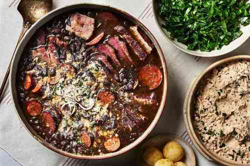
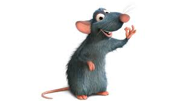

Feijoada Recipe

So you want to do a feijoada, but have no idea how? Dont worry, here is how you can make that special feijoada in just few simple steps. Here is what you`ll need
- 2 tablespoons vegetable oil
- 3 garlic cloves, thinly sliced
- 1 large onion, finely chopped
- 1 1/2 pounds dried black beans, soaked overnight and drained
- 3 1/2 quarts water
- 1 pound fresh spicy sausage, such as linguiça
- 3/4 pound dried beef (carne seca) or corned beef, in one piece
- 1 1/2 pounds smoked pork chops
- 3/4 pound lean slab bacon
- 3/4 pound chorizo, in one piece
- 1 dried red chile
- Kosher salt
Alright, now that you have all the ingredients, lets get cooking!
Instructions
Heat the vegetable oil in a large, heavy casserole. Add the garlic and onion and cook over moderately low heat, stirring occasionally, until the onion is softened, about 7 minutes. Stir in the drained black beans. Add the water to the casserole and bring to a boil over moderately high heat. Reduce the heat to low and simmer the beans for 1 hour, stirring occasionally. Add all of the meats and the dried chile and cook until the beans are tender, about 1 hour longer.
Remove the meats from the casserole and thickly slice them; discard any bones. Pick out and discard the chile. Season the beans with salt. Ladle the beans into shallow bowls and serve with the sliced meats. Pass the toasted manioc flour at the table for sprinkling over the feijoada.

THAT`S IT, YOU MADE YOUR FEIJOADA BABY